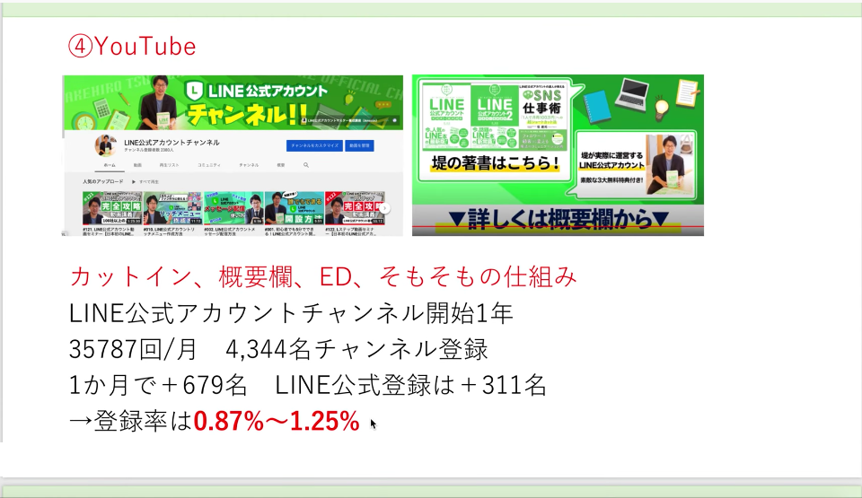
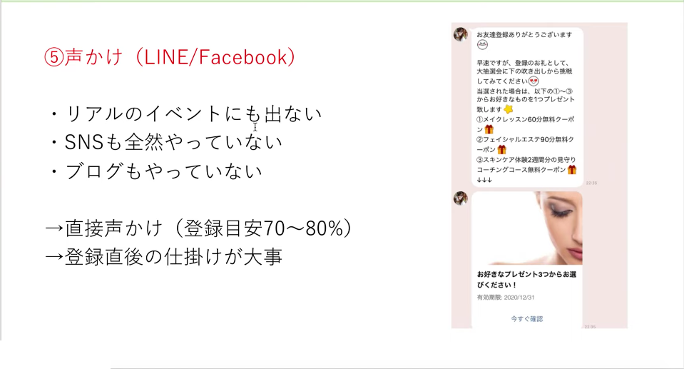
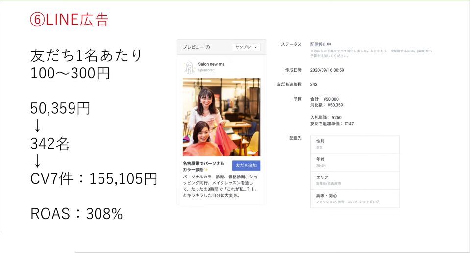

#023 LINE友だちを集める攻略方法-2

こんにちは！matsumotoです。前回は、LINE公式アカウントの「友だちを増やす方法」について、まず基本的な内容から解説しました。今回は、前回のInstagram集客の続きから、いまどきのツールを利用した友だちの集める方法についてお話していきますね！
（１）結局Instagramは友だちを増やせるのか？
前回、ある管理栄養士のインスタグラマーさんについて、「LINE友だち登録してもらったら、今日配信した”食べながら痩せられるレシピ”をプレゼントします！」とインスタライブ配信し、１回のライブにつき約100〜200人の友だち登録をゲットした！というお話をさせていただきました。
ただ、この料理家さんは元々Instagramで1.4万人のフォロワーがいた人です。フォロワー1.4万人は言ってみればSNSにおける「インフルエンサー」レベルの人。小売や飲食店さんなど、フォロワーの多いアカウントを持っていたとしても、ライブをするとなればいわゆる「アカウントの顔」となるキャラクターも必要ですので、その点、ご注意くださいね。
（２）ブログで友達を増やす！
次は、ブログで友だちを増やせるかどうか、解説していきます！
結論はYES！です。SNSのようにどんどん流れては埋もれていくのと違い、ちゃんと投稿した記事が積み重なってお店やビジネスに対する信用が生まれたり、ファンが増えたりします。
お店やビジネスのWEBサイトを作るなら、ぜひブログも挑戦してみてください。まめに更新すればSEOも上がり、そこから良い循環も生まれますよ。「LINE公式アカウントに登録してもらったら〇〇がもらえます！」など、友だち登録とそのメリットも目立つよう掲載しておきましょう。
ただ、友だち登録してもらえる率に関しては、シビアな数字が出ています。目安として、サイト訪問者数のおよそ１％程度が登録してくれれば良いほう、といったところですね。
ここで、ご自身のブログ（サイト）にどのくらいの人がたどり着いているかを確認し、そこからこの率で登録者数を試算してみてください。もしその人数より登録人数が少なければ、ブログ記事に何らかの改善を加えたほうが良いです。
具体的には、①友だち登録メリットを目立たせる②QRコード付きポップアップバナーなど、瞬発的に友だち登録してもらえる仕掛けをする③友だち登録メリットの内容をより充実させる、などです。最後の③が一番重要かもしれませんね。
（３）YouTube
YouTubeは、現在たいへん影響力の強いツールです！一昨年、小学生のなりたい職業第３位に「YouTuber」が選ばれたほど、若くして成功しているYouTuberも多いですね。
では、そのような環境でどうやって闘えばよいのでしょうか？

matsumotoの先輩コンサルタントは、週に一回か二週間に一回、まめに動画を投稿し続けて３ヶ月で100本の動画をアップしたところ、チャンネル登録数4,344名をゲットしました！ 内容の新規性もあり、動画はあっという間に再生回数が伸びてゆきました。
ブログもそうですが、更新頻度は大事です。彼のチャンネルは、先月679名くらい登録者数が増え、そのうち半分程度の311名がLINE公式アカウントにも登録してくれたそうです（Lステップで流入経緯を確認しています）。視聴回数の0.87〜1.25%程が登録してくれていることになるので、YouTubeからの集客としては良い方です。
この際、動画に適宜「LINE公式アカウントを登録してください」「〇〇がお得になります！」という広告画面を挟んだり、エンドロールに表示させるのが必須です！ チャンネルの「概要欄」も、検索された時に真っ先に表示されますので、概要欄にも忘れずに！
（４）SNSは全くやっていません…
そういう人は今回の記事を読んでいないかもしれませんが、実際おられますよね。ただ、Facebookくらいは登録していますよね？
そういう方は、Facebookのメッセージ機能で「〇〇がお得になるので、LINE公式アカウントに登録してもらえませんか」とFacebookの友だちに直接伝えましょう！

または、LINEでリアル友達に同様のメッセージを送りましょう。会った時に直接言うのも良いです。前回の記事の繰り返しになりますが、こういった「リアルのつながり」に直接お願いする方法が、一番登録率が高いんです。先のインスタグラムやYouTubeの例と比べ、実際の友達に登録をお願いした場合の登録率は「7〜8割」！
「FacebookやLINEの友達数も少ないんだよな…」と思われるかもしれませんが、100人に一人程度しか登録してもらえない「1%程度」と、10人に頼んで7人か8人登録してくれるFacebook（もしくはLINE）、どちらの方が登録人数が多いかわかりますよね！
一人ひとりにあててメッセージを送るのは手間も時間もかかりますが、LINE公式アカウントはこういった泥臭い努力を重ねれば結果を出せるツールなのです。
（５）LINE広告を打つ
最後に、LINE公式アカウントのコンサルタントらしい、公式アカウントにしか出来ない方法もご紹介しましょう。LINE広告というものがあります。これは、現在ご自分の友だちでない方のトーク画面にも表示されるもので、有料ではあるのですが、他の広告ツールより断然お得に利用できます！
Facebook広告やInstagram広告を出したことある方ならご存知でしょうが、それらは広告を流すだけで一回1,000〜2,000円かかりますよね。
それに較べ、LINE広告の仕組みは、CPF(cost per friends)方式といって、実際に友だちが増えた時点で課金されるシステム。もしも友だちが増えなければ、ゼロ円なのです。（もちろん友だちが増えなかった広告は、要改善です）
（６）CV（コンバージョン率）
ここまで、「LINE公式アカウントの友だちの増やし方」についてばかり語りましたが、そもそも友だちを増やすのは何のためでしょう？ 実は、LINE公式アカウントを開設し、せっかく友達数が増えたのに「途中で面倒になってほったらかし…」という方も少なくありません。
LINE公式アカウントは、あえて言うならあなたのお店やビジネスのファンを増やすツールです。ファンとは、継続的に好きな人やお店を見守ってくれる存在ですよね。そういった人たちに、定期的にお得な情報やイベントのお知らせなどをお届けし、実際に来店いただくなど売り上げにつなげなければ意味がありません。
ここで、LINE広告を使って来客につながった実例についてご紹介します。ある美容サロンさんですが、昨年広告を打ち、実際に７件ご来店があったそうです。

友だち登録数はもっと多かったので、広告費は５万円ほどかかったのですが、そこからちゃんと来客につなげるメリットを用意しておき、16万円ほどの売り上げになったそうです！ 費用対効果（ROAS：投資したコストの回収率）で言うと、なんと308%という高確率！
ここで、LINE広告で注意すべき点もお知らせしますね。
例えば、コーチ業やコンサルタント業として既に活躍されている方が 認証済みアカウントの申請を行うと、職種的にLINEの利用規約に違反していると判断される可能性があります。場合によっては、アカウント自体をBAN(削除・再開不能)されることもありますので、LINEの規約にある認定アカウントの職種規制をよくご確認ください！
他にも『即ブロック』というのがあります。 せっかく友だち登録してもらったのに自動配信メッセージが配信された瞬間、ブロックしてしまう人も少なくありません。その率、20%程度ほどと考えておけばショックが少ないかもしれません。
そういったことのないよう、自動配信メッセージの内容や登録メリットなど、迷惑がられて即ブロックされないような内容を考えることがとても大切です。デフォルトのメッセージのまま放ったらかし、という方は、今一度友だち数やブロック率を確認し、早急に改善策を練ってください。
重ねて言いますが、LINE公式アカウントは手間のかかる泥臭い努力を続けることで結果を出せるツールです。ここまでで解説したことをふまえ、今一度「公式アカウント開設→友達を増やす→情報発信する→売り上げにつなげる」という導線を真剣に感がてみてください。あなたのお店やビジネスにとって一番ふさわしいメリットや導線が必ずあります！ 見当たらない、悩んでしまって動けない、、、という場合は、わたし達コンサルタントにぜひご相談くださいね！ お悩み解決をサポートさせていただきます。
まずはLINE公式アカウントを開設しましょう！
●LINE公式アカウントの開設方法はこちら
●LINE公式アカウントをオススメする理由はこち
●LINE公式アカウントでできることはこちら
●Lステップでできることはこちら